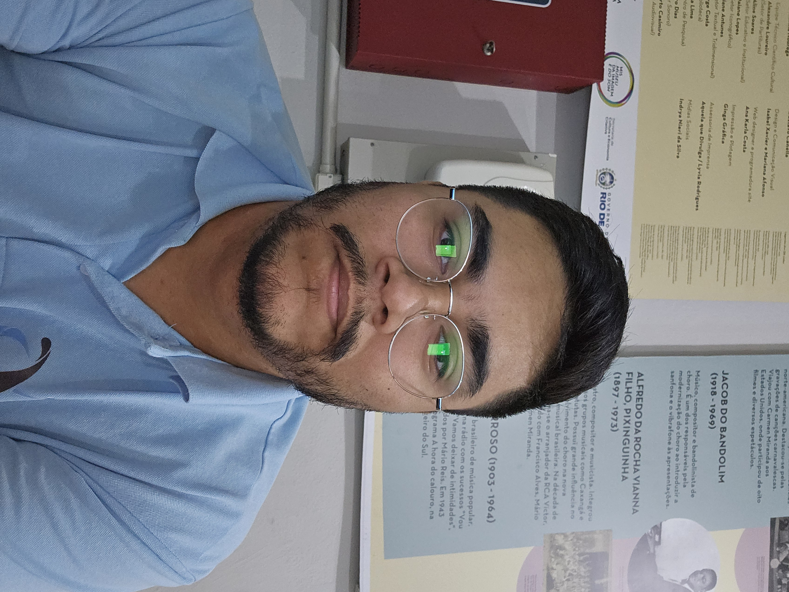

Inicio
Sobre mim
Tecnologia
Redes sociais

Jonas Satiro Gomes
texto1
Rio de Janeiro, cria de Santa Teresa
Filmes e Series Preferidas
Até o Último Homem (2017)
Avatar (2009)
The Big Bang Theory (2007)
The Chosen - Os Escolhidos (2017)
Músicas Preferidas